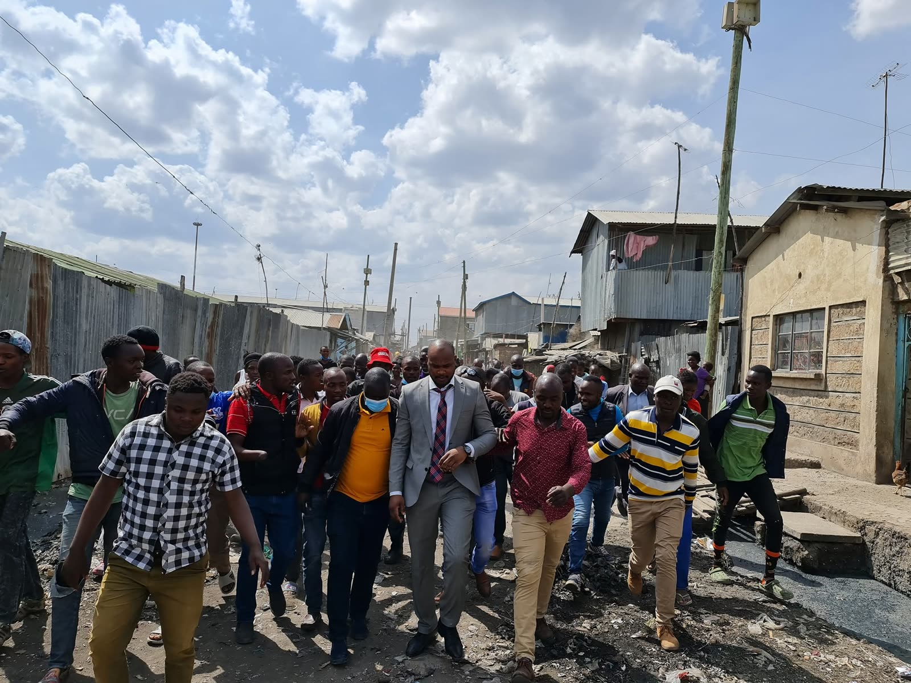
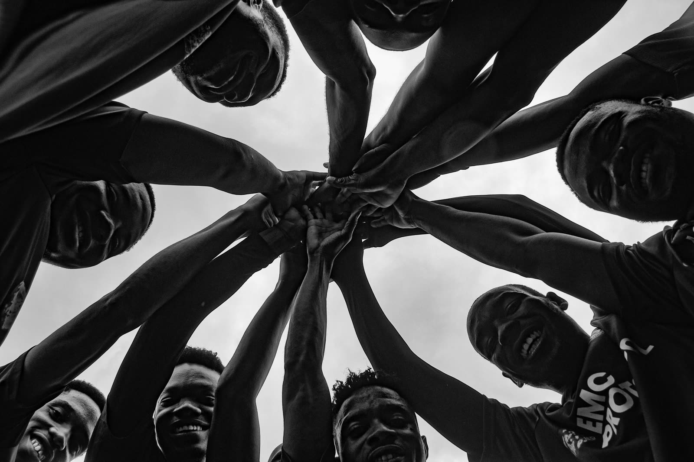

Contact
Questions, tips from the ground, or something you'd like the foundation to look into. This reaches the team directly.
Send a Message
Tell us what you need, and who to reply to.
Thank you.
Your message has been received.
What Happens Next
Four steps, from your message to the record.

- 1
You send it
Pick a topic and a ward if you like, and tell us in your own words.
- 2
The team reads it
Messages arrive sorted by topic and ward.
- 3
It is checked against the record
Anything about a project or a pledge is compared with the Tracker and the Scorecard.
You hear back
If you left an email, the team replies to it.
Other Ways to Help
Not sure what to write? You can also do one of these.

Illustrative photoTell us what is missing
Say what your ward needs that the priorities do not cover yet.
Share your inputCheck a project
See what is being built, where, and how far along it is.
Open the trackerCheck a promise
See every pledge and whether it has been kept.
Open the scorecardTell us what you see
What you see on the ground helps keep the record honest. Send us a message.